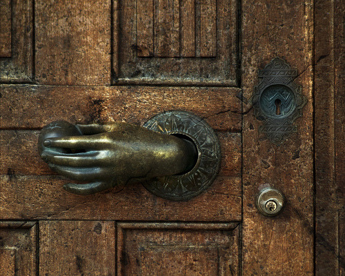

12-20-2013 10:12PM (ET)
In response to the recent revelations about the NSA backdooring RSA libraries I've compiled a brief, incomplete, history of NSA backdoors. Help me make it better by emailing corrections and additions to ethan.r.heilman@gmail.com.
Update: added Actel backdoor, Update 2: There is a hackernews thread for discussion. Update 3: Added Newly discovered postal inception backdoor installation.

1946-1970, The Ultra Secret: After WW2, the British Empire sold captured German Enigma cipher machines to many allied countries and former colonies1. The US and the UK had broken Enigma but had kept this fact secret so that countries would use these broken ciphers. To clarify: the British sold machines they knew they could break to allied nations, then the US and the UK spied on those countries for nearly 30 years exploiting the weaknesses in those machines.
1957 - Present, The Boris Project: In 1957 William Friedman of the NSA met with his old friend Boris Hagelin. The purpose of their meeting was to begin "the Boris Project", in which Crypto AG ciphers would be weakened and backdoored so that the NSA could listen to NATO communications (there is some evidence that suggests that the Boris Project predates this meeting). The meeting was first made public in the biography of Friedman, "The Man Who Broke Purple" 2. Further details were made public with the publication of the "The Puzzle Palace" including letters showing Friedman's concern about direction of the project3. From interviews with ex-employers we know that the addition of backdoors to Crypto AG ciphers occurred no later, and possibility earlier, than the 1970's and likely continues to the present day14. These backdoors included covert channels that allowed full key reconstruction16.
Slowly the world figured out that Crypto AG was not a reliable vendor of cryptographic hardware. In 1986 Reagan tipped off the Libyans that the US could decrypt their communications by talking about information he could only get through Libya decrypts on TV15. In 1991 the Iranians learned that the NSA could break their diplomatic communications when transcripts of Iranian diplomatic communications ended up in a French court case17. In 1992 Iranians got so upset with Crypto AG that they charged a Crypto AG salesman with espionage19. Although, despite this evidence, the Iranians appear to have continued to use Crypto AG machines for diplomatic communications until, and perhaps beyond, 200318. In 2004 Ahmed Chalabi was accused of selling the Iranians the methods by which the US was breaking their codes. It is speculated that this might have been information on Crypto AG backdoors or weaknesses20.
1979 - Present, DES: The Data Encryption Standard was altered by the NSA to make it harder to mathematically attack but easier to attack via Brute Force methods. The original version of DES, called Lucifer, used a block and key length of 128-bits and was vulnerable to differential cryptanalysis. NSA requested that the already small DES key size of 64-bits be shrunk even more to 48-bits, IBM resisted and they compromised on 56-bits4. This key size allowed the NSA to break communications secured by DES.
1993, Clipper Chip: The NSA was deeply concerned with the public adoption by Americans of cryptography that they couldn't break. In 1993 they proposed that voice communication be secured with an encryption chip called "the Clipper Chip". The Clipper Chip was backdoored such that the NSA could, at will, break any communication secured by the Clipper Chip. Unlike most of the backdoors in this list the NSA announced that the presence of the backdoor. Due to its known insecurity the Clipper Chip was never widely adopted.
1997 Lotus Notes: The NSA requested that Lotus weaken its cryptography so that the NSA could break documents and emails secured by Lotus notes5. This Software was used by citizens, companies and governments worldwide67.
200? - Present, Actel ProASIC3 FPGA: In 2012 Skorobogatov and Woods discovered that Actel military grade FPGA's contained a backdoor. The researchers were able to reverse engineer the key such that they could exploit the backdoor24. This chip is used in US weapon systems, nuclear power plants and transportation21. All other Actel chips appear to have this backdoor as well22. At first there was some concern that the backdoor was planted by a foreign government but it was revealed that Actel, an american company, intentionally added this backdoor24.
While there is no smoking gun linking this backdoor to the NSA (at least not yet), it seems implausible to me that a US Company would design a complex backdoor and insert it into chips used in critical US systems without US government approval. Additionally, if Actel had created this backdoor without US approval I would expect more of a response from the US government. The US response has been, to my knowledge, complete silence on the issue.
2004 - 2013, Dual_EC_DRBG: Dual Elliptic Curve Deterministic Random Bit Generator[ or Dual_EC_DRBG is a random number generator created by the NSA. It is designed so that if the NSA selected the internal constants carefully, they could generate a secret key which would allow them to break encryption schemes that relied on Dual_EC_DRBG for security. This property of Dual_EC_DRBG was discovered in 2006 by Brown and rediscovered by Shumow and Ferguson in 2007 leading to public speculation that Dual_EC_DRBG was backdoored8. In 20049 the NSA paid RSA security 10 million dollars10 to add Dual_EC_DRBG as the default choice in some of its libraries. The NSA then used the fact that RSA was using Dual_EC_DRBG to get it approved as a NIST standard.
2013, Enabling for Encryption Chips: In the NSA's budget request documents released by Edward Snowden, one of the goals of the NSA's SIGINT project is to fully backdoor or "enable" certain encryption chips by the end of 201311. It is not publicly known to which encryption chips they are referring.
2013, Trusted Computing Platforms/Modules: A resource in the same, previously mentioned, budget request is the exploitation of foreign Trusted Computing Platforms and technologies12. There has been some concern expressed in Germany that the Microsoft TCM 2.0 could be backdoored by the NSA13.
? - Present, Postal Interception Backdoor Installation: According to a 2010 report leaked to the Guardian25, the NSA's Access and Target Development department routinely intercepts computer equipment being sent through the mail and adds implants26. The equipment, which is generally networking devices and servers, is then sent on its way to be used by the targeted individuals and organisations. These implants allow the NSA the ability to connect into airgapped private networks.
I have an older post in which I speculate about designing a cipher with a backdoor.
"The British government insisted upon this silence because it has given the thousands of Enigma machines that it had gathered up after the end of the war to its former colonies as they gained independence and needed secure systems of communication." p 979 The Codebreakers by David Kahn ↩
"The reason for concern, it was stated in one of several attempts to see what had been written, was that the book might deprive the NSA of the daily information enabling it to read the secret messages of other NATO countries, a process subsequently described as the clandestine reading of all NATO countries' messages. The ability to read all NATO messages was no doubt a natural aim in the aftermath of Suez. It had then seemed that while NSA was able to monitor and decipher many of the British and French communications, the Agency was not able to decipher them all.[..] Friedman's problem was basically that of seeing into the cryptological future, of estimating what measures, overt and convert, would have to be taken by America in the years ahead to counter new machines that might be introduced by Europe's various makers of ciphermachines [..] It is Significant that from 1957 onwards Friedman's private correspondence shows a growing disillusion not only with the NSA -- perhaps an inevitable reaction by a master of cryptography -- but also with some implications of the profession to which he had devoted his life." - The Man Who Broke Purple by Ronald Clark ↩
"With regard to the connection with Hagelin, evidence can be seen in a revealing letter dated August 8, 1958, from Friedman to Howard Engstrom, who had left office as deputy director of NSA only a few days before. In his letter, Friedman indicated his frustration over the handling of the "Boris" project and the fact that it was apparently being taken out of his hands", The Puzzle Palace by James Bamford ↩
"NSA worked closely with IBM to strengthen the algorithm against all except brute force attacks and to strengthen substitution tables, called S-Boxes. Conversely, NSA tried to convince IBM to reduce the length of the key from 64-bit to 48-bits. Ultimately, they compromised on a 56-bit key." Book III: Retrenchment and Reform by Tom Johnson ↩
"Before the US crypto export regulations were finally disolved the export version of Lotus Notes used to include a key escrow / backdoor feature called differential cryptography. The idea was that they got permission to export 64 bit crypto if 24 of those bits were encrypted for the NSA's public key. The NSA would then only have the small matter of brute-forcing the remaining 40 bits to get the plaintext, and everyone else would get a not-that-great 64 bit key space (which probably already back then NSA would have had the compute power to brute force also, only at higher cost)." NSA's Backdoor Key from Lotus-Notes ↩
"Giant US software manufacturer Lotus has been lowering the profile of information about how they have installed an NSA-only trapdoor into e-mail and conference systems used by many European governments, including the German Ministry of Defence, the French Ministry of Education and Research and the Ministry of Education in Latvia." Only NSA can listen, so that's OK by Duncan Campbell ↩
"One of the world's most widely used e-mail programs, the American Lotus Notes, is not so secure as most of its 400,000 to 500,000 Swedish users believe. To be sure, it includes advanced cryptography in its e-mail
function, but the codes that protect the encryption have been surrendered to American authorities. With them, the U.S. government can decode encrypted information. Among Swedish users are 349 parliament members, 15,000 tax agency employees, as well as employees in large businesses and the defense department. I didn't know that our Notes keys were deposited (with the U.S.). It was interesting to learn this,'' says Data Security Chief Jan Karlsson at the [Swedish] defense department. Gunnar Grenfors, Parliament director and daily e-mail user, says,I didn't know about this--here we handle sensitive information concerning Sweden's interests, and we should not leave the keys to this information to the U.S. government or anyone else. This must be a basic requirement.''" Secret Swedish E-Mail Can Be Read by the U.S.A. by
Fredrik Laurin, Calle Froste, Svenska Dagbladet ↩
"What Shumow and Ferguson showed is that these numbers have a relationship with a second, secret set of numbers that can act as a kind of skeleton key. If you know the secret numbers, you can predict the output of the random-number generator after collecting just 32 bytes of its output. To put that in real terms, you only need to monitor one TLS internet encryption connection in order to crack the security of that protocol. If you know the secret numbers, you can completely break any instantiation of Dual_EC_DRBG." - Did NSA Put a Secret Backdoor in New Encryption Standard? by Bruce Schneier ↩
"Curry told WIRED that the company added the Dual EC DRBG algorithm to its libraries in 2004 and 2005 at a time when elliptic curve algorithms were becoming the rage and were considered to have advantages over other algorithms." RSA Tells Its Developer Customers: Stop Using NSA-Linked Algorithm by Kim Zetter ↩
"Undisclosed until now was that RSA received $10 million in a deal that set the NSA formula as the preferred, or default, method for number generation in the BSafe software, according to two sources familiar with the contract." Exclusive: Secret contract tied NSA and security industry pioneer by JOSEPH MENN ↩
"(TS//SI//REL TO USA, FVEY) Complete enable for [REDACTED] encryption chips used in Virtual Private Network and Web encryption devices [CCP_00009]" - (U) COMPUTER NETWORK OPERATIONS (U) SIGINT ENABLING ↩
"(TS//SI//REL TO USA, FVEY) Exploit foreign trusted computing platforms and technologies." - (U) COMPUTER NETWORK OPERATIONS (U) SIGINT ENABLING ↩
"The BSI's announcement explained that "from the perspective of the BSI, the use of Windows 8 in combination with a TPM 2.0 is accompanied by a loss of control over the operating system and the hardware used" (per the translation). It suggested that the combination of Windows 8 and TPM 2.0 could enable "sabotage" by third parties. [..] The Zeit Online article cites an interview (in German) with Dr. Rüdiger Weis of the Beuth Hochschule für Technik Berlin institution who said that "together with the procedures implemented by Microsoft within Windows 8 (particularly secure boot) the control over its own hardware and software is removed from largely the user" (Bing translation). Weis added that "the TPM chip for the NSA is a dream" (translation), in the wake of Edward Snowden's disclosures about broad U.S. National Security Administration spying." - German Agency Sees Security Issues with Windows 8 and TPM 2.0 by Kurt Mackie ↩
"One former engineer says he first heard that the machines were being "adjusted" from Boris Hagelin Jr., son of the company's founder and sales manager for North and South America. When they were stranded in Buenos Aires, Argentina, for a few days in 1970, the younger Mr. Hagelin complained to the engineer about being forced by his father to rig the machines, the engineer says. Back in Switzerland, the engineer confronted the elder Mr. Hagelin. The old man, he says, confirmed the deception and justified it with a theory of political paternalism. "He said different countries need different levels of security," recalls the engineer, who asked not to be identified. While the United States and other leading Western countries required completely secure communications, Mr. Hagelin explained, such security would not be appropriate for the Third World countries that were Crypto's customers. [..] According to this engineer and several others, the alterations in the designs of various machines were detectable, if at all, only to an expert in cryptologic mathematics. Sometimes the mathematical formulas that determined the strength of the encryption contained certain flaws making the codes rapidly breakable by a cryptanalyst who knew the technical details. In other cases, the designs included a "trapdoor" -- allowing an insider to derive the numerical "key" to the encrypted text from certain clues hidden in the text itself." - No Such Agency Part Four: Rigging the Game by Scott Shane and Tom Bowman, Sun Staff ↩
"First, U.S. President Ronald Reagan informed the world on national television that the United States was reading Libyan communications. This admission was part of a speech justifying the retaliatory bombing of Libya for its alleged involvement in the La Belle discotheque bombing in Berlin's Schoeneberg district, where two U.S. soldiers and a Turkish woman were killed, and 200 others injured. Reagan wasn't talking about American monitoring of Libyan news broadcasts. Rather, his "direct, precise, and undeniable proof" referred to secret (encrypted) diplomatic communication between Tripoli and the Libyan embassy in East Berlin." - NSA, Crypto AG, and the Iraq-Iran Conflict by J. Orlin Grabbe ↩
"Depending on the projected usage area the manipulation on the cryptographic devices were more or less subtle, said Polzer. Some buyers only got simplified code technology according to the motto "for these customers that is sufficient, they don't not need such a good stuff." In more delicate cases the specialists reached deeper into the cryptographic trick box: The machines prepared in this way enriched the encrypted text with "auxiliary informations" that allowed all who knew this addition to reconstruct the original key. The result was the same: What looked like inpenetrateable secret code to the users of the Crypto-machines, who acted in good faith, was readable with not more than a finger exercise for the informed listener." - Who is the authorized fourth, DER SPIEGEL issue 36/96 pages 206-207 ↩
"Next, this leak was compounded by the U.S. demonstration that it was also reading secret Iranian communications. As reported in Switzerland's Neue Zurcher Zeitung, the U.S. provided the contents of encrypted Iranian messages to France to assist in the conviction of Ali Vakili Rad and Massoud Hendi for the stabbing death in the Paris suburb of Suresnes of the former Iranian prime minister Shahpour Bakhtiar and his personal secretary Katibeh Fallouch." - NSA, Crypto AG, and the Iraq-Iran Conflict by J. Orlin Grabbe ↩
"Tarfa: As you know, Khomeini did not use telephones, but we monitored the communications between the Iranian ministry of foreign affairs and the Iranian embassies around the world, because they were using the same machine as the military. We would intercept the information from the Iranian embassies in Turkey, Afghanistan, Pakistan, and any instructions from the ministry of foreign affairs to the embassies. We sent this information to the intelligence service to be analyzed. For example, when the Taliban had control in Mazar-e-Sharif, [in 1998] we had this information. We even followed up on Iranian operations beyond Iran. We exposed Iranian sources in Iraq through the embassy. Iran continued to use the T450 at least until the Americans occupied Iraq in 2003. Murray: We now know every major power involved in World War II was reading some, if not all, of the major codes of both their enemies and their allies. The Swiss T450 machine was from that era. It is a bit shocking that Iran continued using this machine into 2003." - Saddam's Generals: Perspectives of the Iran-Iraq War., by Kevin M. Woods, et al ↩
" In 1992, Iran arrested Hans Buehler, a Crypto AG employee, on suspicion that Crypto AG had installed back doors in the encryption machines it sold to Iran -- at the request of the NSA. He proclaimed his innocence through repeated interrogations, and was finally released nine months later in 1993 when Crypto AG paid a million dollars for his freedom -- then promptly fired him and billed him for the release money. At this point Buehler started asking inconvenient questions about the relationship between Crypto AG and the NSA." - Breaking Iranian Codes Crypto-Gram by Bruce Schneier ↩
"Ahmed Chalabi is accused of informing the Iranians that the U.S. had broken its intelligence codes. What exactly did the U.S. break? How could the Iranians verify Chalabi's claim, and what might they do about it? This is an attempt to answer some of those questions. [..] To protect their secrets, Iranian intelligence -- like the leaders of all countries -- communicate in code. These aren't pencil-and-paper codes, but software-based encryption machines. The Iranians probably didn't build their own, but bought them from a company like the Swiss-owned Crypto AG. Some encryption machines protect telephone calls, others protect fax and Telex messages, and still others protect computer communications." - Breaking Iranian Codes Crypto-Gram by Bruce Schneier ↩
"This particular chip is prevalent in many systems from weapons, nuclear power plants to public transport. In other words, this backdoor access could be turned into an advanced Stuxnet weapon to attack potentially millions of systems. The scale and range of possible attacks has huge implications for National Security and public infrastructure."" China not to blame for backdoor in US military chip Security experts, along with researcher who found the backdoor, say no evidence of China's involvement by Taylor Armerding ↩
"We analysed other Microsemi/Actel products and found they all have the same deliberate backdoor." - Breakthrough silicon scanning discovers backdoor in military chip (DRAFT of 05 March 2012) by Skorobogatov and Woods ↩
"As a result we were able to locate and exploit undocumented backdoor in the Actel ProASIC3 chip positioned as industry's highest security device. To our knowledge this is the first documented case of a backdoor inserted in real world device with critical applications. Not only can a poorly protected AES key be extracted from thePA3 chips in no time and with minimal effort, but the Passkey which was believed to be unbreakable and which was robust against DPA attacks can also be extracted" - Breakthrough silicon scanning discovers backdoor in military chip (DRAFT of 05 March 2012) by Skorobogatov and Woods ↩
"One could possibly argue that the backdoor we discovered is a bug or something overlooked by the developers. However, this is not the case as we performed intensive investigation into this problem and found proof that the backdoor was deliberately inserted and even used as a part of the overall security scheme. We cannot disclose all of these findings at present due to a confidentiality agreement." - Breakthrough silicon scanning discovers backdoor in military chip (DRAFT of 05 March 2012) by Skorobogatov and Woods ↩↩
'But while American companies were being warned away from supposedly untrustworthy Chinese routers, foreign organisations would have been well advised to beware of American-made ones. A June 2010 report from the head of the NSA's Access and Target Development department is shockingly explicit. The NSA routinely receives – or intercepts – routers, servers and other computer network devices being exported from the US before they are delivered to the international customers.The agency then implants backdoor surveillance tools, repackages the devices with a factory seal and sends them on. The NSA thus gains access to entire networks and all their users. The document gleefully observes that some "SIGINT tradecraft … is very hands-on (literally!)". Eventually, the implanted device connects back to the NSA. The report continues: "In one recent case, after several months a beacon implanted through supply-chain interdiction called back to the NSA covert infrastructure. This call back provided us access to further exploit the device and survey the network."' Glenn Greenwald: how the NSA tampers with US-made internet routers ↩
An NSA manager described the process as follows: 'Here’s how it works: shipments of computer network devices (servers, routers, etc,) being delivered to our targets throughout the world are intercepted. Next, they are redirected to a secret location where Tailored Access Operations/Access Operations (AO-S326) employees, with the support of the Remote Operations Center (S321), enable the installation of beacon implants directly into our targets’ electronic devices. These devices are then re-packaged and placed back into transit to the original destination. All of this happens with the support of Intelligence Community partners and the technical wizards in TAO.' -Photos Of The NSA's Secret Workshop Where It Intercepts Packages And Plants Bugs In Electronics ↩